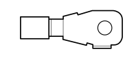

A1H BATTERY ( ENGINE )
- Path
- Electrical equipment > 3 CONNECTORS > A STARTING - RECHARGING > A001 BATTERY > A1H BATTERY ( ENGINE )
- Kind
- connector pinout (pin -> wire colour -> other end)
- Applies to
- engines: 1.3 JTD 16V; all production periods
- Interactive page
- https://sloeber94.github.io/elrnDB-fDbl/en/#/223004236
Applies to: engines: 1.3 JTD 16V; all production periods

Wiring | Colour |
|---|---|
Pin | Cable | Destination | |||
|---|---|---|---|---|---|
Sec.. | Colour | Nodo | Connect. | Pin | |
1 | 6 | N (black) | X | 2 | |
See K100 FUEL HEATING RESISTANCE AND TEMPERATURE SENSOR ( ENGINE ) | 4 | ||||
1 | |||||
2 | |||||
3 | |||||
1 | |||||
Topics linked from this page (5)
- 50 ENGINE
- K31 WATER IN DIESEL FILTER SENSOR ( ENGINE )
- K100 TEMPERATURE SENSOR AND HEATING RESISTANCE
- M10B ENGINE MANAGEMENT ECU ( ENGINE )
- M15A HEATER PLUGS CONTROLUNIT ( ENGINE )
Topics that link to this page (16)
- 1072B50 sleeves connecting air capacity box to inlet manifold is - r+r
- 1072C44 exhaust manifold heat shield on bulkhead - r+r
- 1084A42 engine oil pressure warning light switch - r + r
- 1084B30 engine oil filter r r
- 1088B10 engine cooling tank - r + r
- 4130A10 power steering box - r+r - check tow-in if necessary separately - includes bleeding
- 4130B20 power steering pump r r
- 5040A20 air conditioner compressor - r+r - includes fluid level check and top up if necessary
- 5040A26 compressor mount - r r
- 5040A50 pipe from compressor to air conditioner condenser - r+r
- 5530A10 alternator - r+r
- 5530B10 battery - r+r
- K31 WATER IN DIESEL FILTER SENSOR ( ENGINE )
- K100 FUEL HEATING RESISTANCE AND TEMPERATURE SENSOR ( ENGINE )
- M10B ENGINE MANAGEMENT ECU ( ENGINE )
- M15A HEATER PLUGS CONTROLUNIT ( ENGINE )